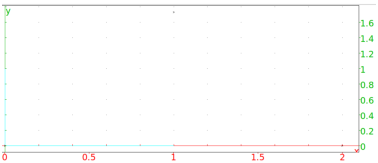
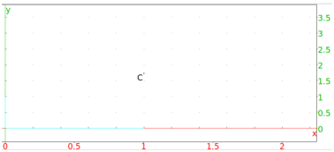

13.6.13 The vertices of a polygon in the plane: vertices vertices_abc
The vertices command finds the vertices of a polygon.
vertices_abc is a synonym for vertices.
-
vertices takes one argument:
P, a polygon.
- vertices(P) returns a list of the vertices of P and
draws them.
Examples.
-
Input:
vertices(equilateral_triangle(0,2))
Output:

- Input:
C:= vertices(equilateral_triangle(0,2))[2]
Output:
